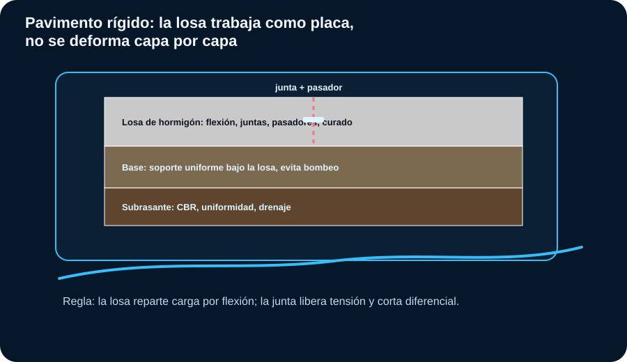
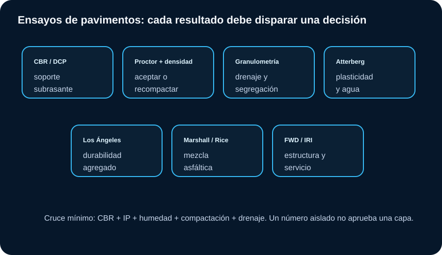
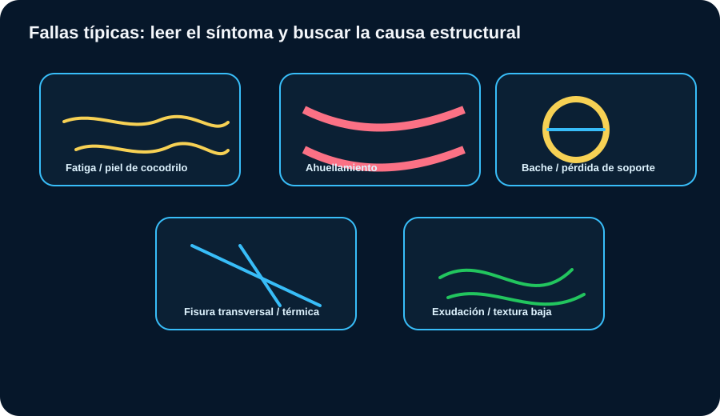

Pavimentos
El pavimento no falla sólo por “asfalto malo”. Muchas fallas nacen en subrasante, drenaje, compactación, gradación y control térmico. Este módulo cruza ensayos con decisiones de campo.
Estructura de pavimento flexible
La lectura correcta empieza por saber qué función cumple cada capa.

Cómo leer: la carpeta distribuye cargas y brinda servicio; base/subbase reparten y drenan; subrasante define el soporte real.
Capas y controles
| Capa | Qué controla | Ensayos clave |
|---|---|---|
| Subrasante | Soporte, humedad, plasticidad, expansión. | CBR, Proctor, densidad, Atterberg, DCP. |
| Subbase | Drenaje, transición, soporte adicional. | Granulometría, IP, CBR, densidad, equivalente de arena. |
| Base granular | Capacidad estructural, trabazón, durabilidad. | Granulometría, desgaste, CBR, compactación, sanidad. |
| Mezcla asfáltica | Impermeabilidad parcial, fricción, fatiga, ahuellamiento. | Marshall/Rice, contenido de asfalto, vacíos, temperatura, densidad. |
| Drenaje | Vida útil de todo el paquete. | Pendientes, cunetas, filtros, permeabilidad, bombeo. |
Norma: cada capa se verifica con el ensayo correspondiente ya visto en Mecánica de Suelos (Proctor ASTM D698/D1557, densidad de campo ASTM D1556/D2167/D6938) y CBR ASTM D1883 para subrasante. Criterio de obra: diseñar el espesor "de catálogo" sin verificar que cada capa cumpla su función real (drenar, repartir, soportar) es de los errores más caros de corregir una vez pavimentado.
Pavimento rígido
La losa de hormigón trabaja a flexión; las juntas controlan dónde y cómo fisura.

Cómo leer: la losa reparte carga por flexión sobre la base; las juntas, con o sin pasadores, liberan tensión térmica y controlan la fisuración en lugar de dejarla aparecer al azar.
Capas, juntas y criterio
| Elemento | Qué controla | Alerta de obra |
|---|---|---|
| Losa de hormigón | Resistencia a flexión, espesor, curado, textura. | Curado deficiente o corte de junta tardío: fisuración descontrolada. |
| Base | Soporte uniforme; evita bombeo de finos bajo la losa. | Erosión de base por agua: escalonamiento y pérdida de soporte en juntas. |
| Juntas de contracción | Inducen la fisura donde conviene, no donde cae. | Corte tardío o muy superficial: la losa fisura fuera de la junta. |
| Pasadores (dowels) | Transfieren carga entre losas sin restringir el movimiento. | Mala alineación: traba la junta o no transfiere carga. |
| Rígido vs. flexible | Rígido distribuye por flexión; flexible por capas. | Rígido conviene con tránsito pesado/canalizado o subrasante pobre; flexible se repara más rápido por tramos. |
Norma: la resistencia de la losa se verifica con ensayos de hormigón ya estandarizados: compresión según ASTM C39, flexión con viga simplemente apoyada según ASTM C78. Criterio de obra: el corte de juntas debe hacerse dentro de la ventana de tiempo que indica el proyecto; cortar tarde es la causa más común de fisuración fuera de junta en losas nuevas.
Ensayos principales
Cada ensayo debe cerrar una decisión: aceptar, corregir, reemplazar o rediseñar.

Cómo leer: no se interpreta CBR sin humedad, ni compactación sin Proctor, ni base granular sin granulometría y plasticidad.
Lectura por ensayo
| Ensayo | Resultado | Decisión de obra |
|---|---|---|
| CBR | Soporte relativo. | Define mejoramiento, espesor o rechazo de subrasante/material. |
| Proctor | wopt y γd máx. | Define humedad de compactación y referencia de aceptación. |
| Densidad campo | GC logrado. | Aceptar, recompactar, ajustar humedad o retirar material. |
| Granulometría | Distribución y finos. | Evitar segregación, bloqueo de drenaje o baja trabazón. |
| Atterberg | LL, LP, IP. | Detectar sensibilidad al agua, bombeo y expansión. |
| DCP | Penetración por golpe. | Control rápido de uniformidad y soporte in situ. |
| Marshall/Rice | Estabilidad, flujo, vacíos, Gmm. | Control de mezcla asfáltica, densidad y riesgo de deformación. |
| FWD/IRI | Deflexión y regularidad. | Evaluar estructura existente y calidad funcional. |
CBR, DCP y subrasante
El soporte no depende sólo del suelo; depende de su estado de humedad y compactación.
CBR orientativo de subrasante
| CBR | Lectura | Criterio práctico |
|---|---|---|
| < 3% | Muy pobre. | Riesgo alto: mejorar, estabilizar, reemplazar o rediseñar paquete. |
| 3–5% | Pobre. | Revisar drenaje, plasticidad y espesor; no confiar sin mejora. |
| 5–10% | Regular. | Puede funcionar en tránsito bajo/medio con buen drenaje y compactación. |
| 10–20% | Bueno. | Subrasante favorable, verificar uniformidad. |
| > 20% | Muy bueno. | Buen soporte preliminar; igual controlar agua y variabilidad. |
Semáforo CBR + IP + compactación
Estimación rápida DCP → CBR
Correlación orientativa genérica. Para diseño, calibrar con material local y normativa del proyecto.
Norma: CBR de laboratorio según ASTM D1883/AASHTO T193; DCP según ASTM D6951 (estimación in situ correlacionada con CBR). Criterio de obra: el DCP es rápido y útil para control de uniformidad, pero la correlación DCP→CBR es genérica; tratarla como CBR de diseño sin calibración local es sobreconfiar en una estimación.
Material granular para base y subbase
Una base granular no se aprueba por “verse buena”: se aprueba por gradación, plasticidad, durabilidad, soporte y compactación.
| Parámetro | Resultado problemático | Efecto probable | Acción |
|---|---|---|---|
| Finos altos | Pasa #200 elevado. | Bloqueo de drenaje, bombeo, sensibilidad al agua. | Rechazar, lavar, mezclar o cambiar fuente. |
| IP alto | Finos plásticos. | Deformación con humedad, pérdida de soporte. | No usar en base sin estabilización o autorización técnica. |
| Gradación discontinua | Saltos en curva. | Segregación y compactación no uniforme. | Control de acopio, mezcla y extendido. |
| Los Ángeles alto | Agregado débil. | Generación de finos y pérdida de estructura. | Revisar especificación; cambiar fuente si excede. |
| GC bajo | Densidad insuficiente. | Asentamiento, deformación, ahuellamiento. | Recompactar con humedad y equipo adecuado. |
Norma: el desgaste por abrasión ("Los Ángeles") se mide según ASTM C131. Los límites exactos dependen del pliego. En pavimentos, “casi cumple” en la base puede convertirse en falla repetitiva bajo tránsito.
Mezclas asfálticas
La mezcla debe cumplir diseño, producción, transporte, temperatura, compactación y densidad.
| Resultado | Lectura técnica | Riesgo | Acción |
|---|---|---|---|
| Vacíos bajos | Mezcla cerrada o exceso de asfalto. | Exudación y ahuellamiento. | Revisar dosificación y compactación. |
| Vacíos altos | Falta densidad o asfalto insuficiente. | Oxidación, agua, desprendimiento. | Controlar temperatura, rodillado y contenido de ligante. |
| Flujo alto | Mezcla deformable. | Ahuellamiento en clima/tránsito exigente. | Ajustar granulometría, ligante o vacíos. |
| Estabilidad baja | Baja resistencia a carga. | Deformación, fisuración temprana. | Revisar agregados, ligante y diseño Marshall/Superpave. |
| Llega fría | Ventana de compactación perdida. | Baja densidad y vida útil corta. | Rechazar o limitar colocación según especificación. |
Norma: Marshall según ASTM D6927; densidad de la mezcla compactada según ASTM D2726; densidad máxima teórica (Rice) según ASTM D2041. Criterio de obra: los vacíos se calculan combinando D2726 y D2041; tener solo uno de los dos datos no permite saber si el problema es de diseño de mezcla o de compactación en obra.
Fallas típicas y diagnóstico
El síntoma visible rara vez es la causa única.

Cómo leer: piel de cocodrilo sugiere fatiga estructural; ahuellamiento sugiere deformación de mezcla/capa/subrasante; baches suelen combinar agua, fisuras y pérdida de soporte.
Matriz de diagnóstico
| Falla | Causas probables | Ensayos/controles |
|---|---|---|
| Piel de cocodrilo | Fatiga, espesor insuficiente, base/subrasante débil. | Deflectometría, calicatas, CBR/DCP, espesores. |
| Ahuellamiento | Mezcla inestable, baja densidad, base deformable. | Densidad, Marshall, temperatura, granulometría, DCP. |
| Bombeo | Agua + finos + carga repetida. | Drenaje, finos, IP, juntas/fisuras, NF. |
| Baches | Entrada de agua, pérdida de soporte, mala reparación. | Inspección, drenaje, testigos, densidad, adherencia. |
| Fisura térmica | Contracción, ligante, clima. | Tipo de ligante, edad, temperatura, espaciamiento. |
Norma: el catálogo de fallas y su severidad siguen la metodología de ASTM D6433 (la misma base del PCI). Criterio de obra: una falla aislada rara vez tiene una sola causa; cruzar siempre con humedad, drenaje y estructura antes de decidir si conviene reparación superficial o estructural.
Indicadores de estado: PCI e IRI
Un índice no reemplaza la inspección, pero ordena prioridades y presupuesto de mantenimiento.
PCI (0–100)
| PCI | Condición | Acción típica |
|---|---|---|
| 85–100 | Excelente. | Mantenimiento rutinario/preventivo. |
| 70–85 | Muy bueno. | Sellado de fisuras y mantenimiento preventivo. |
| 55–70 | Bueno. | Mantenimiento correctivo localizado. |
| 40–55 | Regular. | Rehabilitación menor: fresado y recapado parcial. |
| 25–40 | Malo. | Rehabilitación mayor; evaluar la estructura. |
| 0–25 | Muy malo / fallado. | Reconstrucción; el mantenimiento ya no es eficiente. |
IRI (m/km)
| IRI | Calidad funcional | Lectura |
|---|---|---|
| < 2 | Muy buena. | Confort alto; típico de obra nueva bien ejecutada. |
| 2–3.5 | Buena. | Aceptable para la mayoría de las categorías de vía. |
| 3.5–4.5 | Regular. | Empieza a afectar confort y costo operativo vehicular. |
| 4.5–6 | Mala. | Programar intervención; revisar causa estructural o funcional. |
| > 6 | Muy mala. | Restricción de velocidad probable; prioridad de intervención. |
Norma: PCI según ASTM D6433; IRI según ASTM E1926 (cálculo a partir del perfil longitudinal). Criterio de obra: un PCI alto y un IRI malo pueden coexistir en el mismo tramo, porque miden cosas distintas (condición estructural/superficial vs. regularidad); no usar uno para inferir el otro sin medirlo.
Regla de campo (regla de 3 m): apoyar una regla recta de 3 metros sobre la superficie y medir el hueco máximo debajo. Una deformación mayor a 6 mm bajo esa regla es una alerta práctica de inspección, independiente del valor de PCI calculado: sirve para detectar ahuellamiento o asentamientos localizados entre relevamientos formales, sin instrumental especial.
Interpretar PCI
Clasificación orientativa tipo PCI (ASTM D6433). El método y los pesos exactos de cada falla dependen del manual de inspección adoptado por el proyecto.
Capacidad estructural aeroportuaria: PCN/ACN y su evolución a PCR/ACR
No confundir con PCI: esto no mide condición superficial, mide cuánto soporta el pavimento frente a una aeronave determinada.
PCI no es lo mismo que PCN/PCR
| Sistema | Qué mide | Formato | Norma |
|---|---|---|---|
| PCI | Condición superficial/estructural visible, por inspección de fallas. | Número 0-100. | ASTM D6433. |
| PCN (sistema histórico, 1981-2024) | Capacidad portante declarada del pavimento. | Número + código de tipo de pavimento, subrasante, presión de neumático y método. | OACI Anexo 14, sistema adoptado en 1981. |
| ACN | Efecto de una aeronave específica sobre ese pavimento. | Número directamente comparable con el PCN. | Calculado por fabricante/operador según método OACI. |
| PCR (vigente desde nov. 2024) | Capacidad portante declarada del pavimento, con análisis elástico en capas (más preciso que el método anterior). | Número, mismo formato comparativo que el ACR. | OACI Anexo 14, Enmienda 15. |
Regla de decisión: si ACR/ACN ≤ PCR/PCN, la aeronave opera sin restricción. Si lo supera, no implica imposibilidad automática: se evalúan restricciones de peso, frecuencia o política operativa del operador.
Norma: OACI adoptó el sistema histórico ACN-PCN en 1981. La Enmienda 15 al Anexo 14 Vol. I introdujo el sistema ACR-PCR (basado en análisis elástico en capas, sin los factores alfa y de equivalencia de capas del método anterior), con fecha efectiva 20 de julio de 2020 y aplicación obligatoria plena desde el 28 de noviembre de 2024: desde esa fecha es el único método aprobado por OACI. Criterio de obra: en el lenguaje de campo y en documentación previa a la transición sigue siendo habitual hablar de "PCN" y "ACN" aunque el valor ya se calcule bajo ACR-PCR; conviene aclarar siempre bajo qué sistema se informa un número, porque los valores de ambos métodos no son directamente intercambiables entre sí.
Capas de pavimento aeroportuario: rangos prácticos de referencia
| Capa | CBR orientativo | Compactación habitual |
|---|---|---|
| Base | ≥80% | ≥98% Proctor Modificado |
| Subbase | ≥30% | ≥95% Proctor Modificado |
| Subrasante | ≥5% (mínimo práctico para no partir de un suelo muy débil) | ≥95% Proctor Modificado |
Criterio de obra: estos son rangos de referencia de criterio práctico, no de pliego; la especificación real de cada proyecto (tipo de pavimento, aeronave crítica, tránsito, normativa aplicable) siempre manda sobre cualquier rango genérico. Valores por debajo de estos mínimos en una pista operativa son motivo de escalar a gerencia técnica de inmediato, no de "esperar a ver".